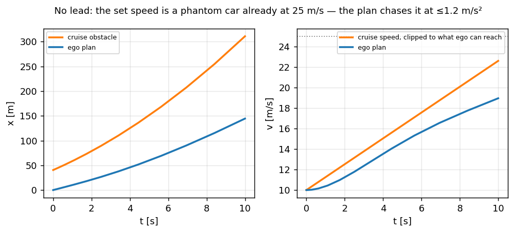
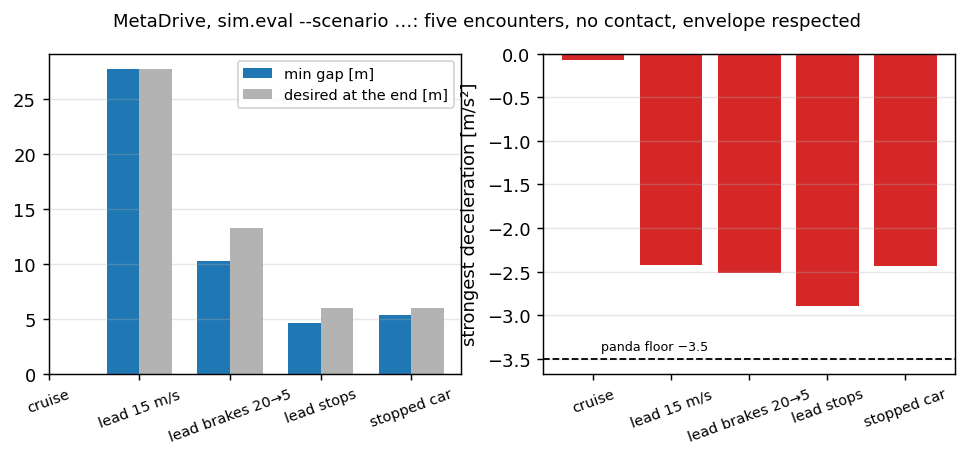

Longitudinal planner — speed and the gap#
The lateral chapters ended with a curvature. This one ends with an acceleration: the planner decides how fast to go and how far behind the car ahead to sit, the control law turns that into an acceleration request, and the platform lays it into the car’s own ACC frames — the same three-service shape as the steering path, on purpose. It replaces the stock-cruise-button path this stack drove speed with before: pressing a stalk for the driver is a hack around not having the actuator; an acceleration is the actuator.
Code: longitudinal/long_mpc.cpp (the optimiser), longitudinal/long_planner.cpp (what goes around it),
longitudinal/long_control.cpp (the law), platform/volkswagen/mqbcan.cpp (ACC_06/ACC_07/ACC_02).
The formulation, weights and grid are openpilot’s long_mpc.py / longitudinal_planner.py; the solver is
ours, and the chapter ends with the sim runs that say the port behaves.
If you have not met an ACC
Adaptive cruise control holds a set speed when the road is empty and a time gap behind the car ahead when it is not — 1.45 s here, plus a standstill margin of 6 m. Everything below is one question asked twelve times into the future: where may I be at time t so that stopping is still comfortable?
The two distances everything turns on#
Shared toy constants for every snippet below — upstream’s, verbatim:
import math
import numpy as np
T_FOLLOW = 1.45 # desired time gap [s]
COMFORT_BRAKE = 2.5 # deceleration the safe distance assumes [m/s^2]
STOP_DISTANCE = 6.0 # gap kept at standstill [m]
A_CRUISE_MIN = -1.2 # comfort deceleration when cruising or following [m/s^2]
ACCEL_MIN, ACCEL_MAX = -3.5, 2.0 # the panda's envelope for a VW MQB [m/s^2]
def safe_distance(v_ego, t_follow=T_FOLLOW):
"""Room to stop at COMFORT_BRAKE from v_ego, plus the time gap, plus the standstill margin."""
return v_ego**2 / (2 * COMFORT_BRAKE) + t_follow * v_ego + STOP_DISTANCE
def stopped_equivalence(v_lead):
"""How much further a moving lead's stopping point is than its bumper."""
return v_lead**2 / (2 * COMFORT_BRAKE)
def desired_gap(v_ego, v_lead):
return safe_distance(v_ego) - stopped_equivalence(v_lead)
for v in (10, 20, 30):
print(f"v={v:>2} m/s: safe to a wall {safe_distance(v):6.1f} m, gap behind an equal-speed lead {desired_gap(v, v):5.1f} m")
assert abs(desired_gap(20, 20) - (T_FOLLOW * 20 + STOP_DISTANCE)) < 1e-9
Spelled out, the first function is
Braking distance \(v^2 / (2a)\) comes from \(v^2 - v_0^2 = 2as\) with \(v = 0\): the road a car covers while decelerating from \(v_{\mathrm{ego}}\) to rest at a comfortable \(2.5\ \mathrm{m/s^2}\) — not the tyres’ limit, the passengers’. At 20 m/s that is 80 m; at 30 m/s, 180 m — the term that makes the curve quadratic.
Time gap \(t_{\mathrm{follow}} \cdot v_{\mathrm{ego}}\) is the road covered in 1.45 s at the current speed: the reaction time the plan reserves for the human and for the actuator, and the part that scales the gap with speed the way a driver feels it — 29 m at 20 m/s.
Standstill margin \(d_{\mathrm{stop}}\) is what must remain between the bumpers once both cars stand: 6 m, so that a stop never ends nose-to-tail.
The second function is the same physics seen from the lead’s side:
A lead moving at \(v_{\mathrm{lead}}\) will not stop where it is now: braking at the same comfortable \(a_{\mathrm{brake}}\) it comes to rest \(d_{\mathrm{stopped}}\) further down the road. That is why the MPC’s obstacle is the lead’s position plus \(d_{\mathrm{stopped}}\) — the point where it could stand, not where it is — and why the plan may sit closer behind a moving car than behind a wall. Subtracting one from the other gives the gap the plan settles at:
At equal speeds the quadratic terms cancel and \(d_{\mathrm{gap}} = 1.45\,v + 6\): 35 m at 20 m/s. Closing on a slower lead, the difference of squares is what demands the extra room — at 25 m/s behind a 15 m/s car it adds \((625 - 225)/5 = 80\) m, which is exactly the braking the sim run at the end of the chapter shows.
Two things to hold. First, the safe distance is a stopping distance — it grows with \(v^2\), and at 30 m/s it is 230 m. Second, a lead that is moving buys you its own stopping distance back, so behind a car at your speed the gap collapses to the linear part: \(1.45\,v + 6\). The whole planner is a way of living between those two curves.

Fig. 21 Safe distance to a stopped obstacle (quadratic) against the desired gap behind a lead at the same speed (linear). The plan never lets the ego cross the first; it tries to sit on the second.#
Build 1: a proportional law on the gap — and where it breaks#
The obvious controller: accelerate in proportion to how far the gap is from the desired one.
def follow_p(kp, kv, seconds=40.0, dt=0.05):
"""Ego behind a lead that brakes from 20 to 5 m/s at -2 m/s^2 between t=5 and t=10 s."""
v_lead, v_ego, gap = 20.0, 20.0, 30.0
log = []
for k in range(int(seconds / dt)):
t = k * dt
if 5.0 <= t < 10.0:
v_lead = max(5.0, v_lead - 2.0 * dt)
want = T_FOLLOW * v_ego + STOP_DISTANCE
a = kp * (gap - want) + kv * (v_lead - v_ego)
a = max(ACCEL_MIN, min(ACCEL_MAX, a))
v_ego = max(0.0, v_ego + a * dt)
gap += (v_lead - v_ego) * dt
log.append((t, gap, want, a))
return np.array(log)
gap_only = follow_p(kp=0.35, kv=0.0)
with_speed = follow_p(kp=0.15, kv=0.5)
print(f"gap-only law: min gap {gap_only[:, 1].min():5.1f} m, hardest brake {gap_only[:, 3].min():5.2f} m/s^2")
print(f"with speed term: min gap {with_speed[:, 1].min():5.1f} m, hardest brake {with_speed[:, 3].min():5.2f} m/s^2")
assert gap_only[:, 1].min() < with_speed[:, 1].min(), "a gap-only law overshoots into the lead"

Fig. 22 Toy 1: a gap-only P law rings after the lead brakes; a speed term damps it. Neither knows what the lead will do next second, and neither can trade comfort now for distance later.#
The P law has three failures that no gain fixes. It reacts to the gap after it has closed; it treats a lead braking at −2 and a lead that has stopped braking the same way; and it has no notion of jerk, so it asks for whatever acceleration the error says, instantly. Every one of those is a statement about the future — which is what an optimiser over a horizon is for.
Build 2: the horizon — a triple integrator driven by jerk#
upstream’s longitudinal MPC is small enough to hold in one hand. The plant is ego position, speed and acceleration, and the control is jerk:
It is integrated over twelve intervals on a quadratic grid \(t_i = 10\,(i/12)^2\): 0.07 s at the wheel, 1.6 s at the end of a 10 s horizon. Near-term decisions get resolution, the far end gets reach.
With the jerk held constant over an interval of length \(\Delta t\) the three equations integrate exactly — each is the antiderivative of the one below it:
These are the school kinematics with one more level: \(\tfrac12 a t^2\) becomes \(\tfrac16 j t^3\). Because the plant is linear, the whole 10 s trajectory is a linear function of the twelve jerks — which is what makes the solve below cheap: only the cost is nonlinear, never the physics. A worked node: from \(v = 20\), \(a = 0\), one interval of 1 s at \(j = -1\ \mathrm{m/s^3}\) ends at \(a = -1\), \(v = 19.5\), \(x = 19.83\) m.
N = 12
T = np.array([10.0 * (i / N) ** 2 for i in range(N + 1)])
DT = np.diff(T)
def rollout(u, v0, a0):
"""Exact integration of constant jerk per interval — the plant is linear."""
x, v, a = np.zeros(N + 1), np.zeros(N + 1), np.zeros(N + 1)
v[0], a[0] = v0, a0
for k in range(N):
d = DT[k]
x[k + 1] = x[k] + v[k] * d + 0.5 * a[k] * d * d + u[k] * d**3 / 6
v[k + 1] = v[k] + a[k] * d + 0.5 * u[k] * d * d
a[k + 1] = a[k] + u[k] * d
return x, v, a
print("grid [s]:", np.round(T, 2))
print("first interval %.3f s, last %.2f s" % (DT[0], DT[-1]))
assert abs(T[6] - 2.5) < 1e-9 and abs(T[-1] - 10.0) < 1e-9

Fig. 23 The horizon grid. The red numbers are each interval’s length — and, since acados scales every stage cost by its time step, its weight. Without that scaling the same cost gives a plan far gentler than upstream’s.#
The cost is one obstacle term plus jerk, with upstream’s numbers: X_EGO_OBSTACLE_COST = 3,
J_EGO_COST = 5, A_CHANGE_COST = 200 (fading out over 1–2 s), and soft constraints with LIMIT_COST = 1e6
on speed and acceleration bounds and DANGER_ZONE_COST = 100 on entering 0.75 of the safe distance:
Reading the cost term by term:
\(r_{\mathrm{obs},i}\) is the gap error in units of seconds: the numerator \(g = (x_{\mathrm{obs}} - x) - d_{\mathrm{safe}}(v)\) is how many metres the ego is short of (or beyond) the safe distance, and dividing by \(v + 10\) turns metres into roughly “seconds of headway” — a 10 m error is a lot at 5 m/s (0.67 s) and little at 30 m/s (0.25 s). The \(+10\) keeps the term finite at standstill. The plan aims at \(g = 0\): exactly the safe distance from where the lead could stop, because \(x_{\mathrm{obs}}\) is the lead’s position plus \(d_{\mathrm{stopped}}\).
\(5\,j_i^2\) prices jerk: comfort is the derivative of acceleration, and the square makes one big jolt dearer than two small ones — the reason the plan below ramps its braking instead of stepping it.
\(200\,w_i\,(a_i - a^{\mathrm{prev}}_i)^2\) says do not contradict what you asked a tick ago, with \(w_i\) fading from 1 at \(t \le 1\) s to 0 at 2 s: the near future is committed, the far future is free to change. It is what stops the request from jittering between re-solves.
\(\Delta t_i\) in front of every stage is acados’ integral interpretation of the sum — a 1.6 s stage counts 23 times a 0.07 s one — without which the same weights give a plan three times gentler.
The penalties are one-sided squares: \(10^6\,\max(0, a_{\min} - a_i)^2\) and the like — a wall the solver may lean on but not cross — and \(100\,\max(0, -h_{\mathrm{danger}})^2\) on entering \(0.75\,d_{\mathrm{safe}}\), a softer wall that says “this close only when it cannot be helped”.
def residuals(u, v0, a0, x_obs, a_min=ACCEL_MIN, a_max=1.2):
"""upstream's cost as a residual vector, each stage scaled by sqrt(dt) like acados does."""
x, v, a = rollout(u, v0, a0)
sc = np.sqrt(np.append(DT, 1.0))
r = []
for i in range(N + 1):
g = (x_obs[i] - x[i]) - safe_distance(v[i])
r.append(sc[i] * math.sqrt(3.0) * g / (v[i] + 10.0))
if i < N:
r.append(sc[i] * math.sqrt(5.0) * u[i])
for i in range(N):
z = sc[i] * 1000.0 # sqrt(LIMIT_COST)
r += [z * max(0.0, -v[i]), z * max(0.0, a_min - a[i]), z * max(0.0, a[i] - a_max)]
danger = (x_obs[i] - x[i]) - 0.75 * safe_distance(v[i])
r.append(sc[i] * 10.0 * max(0.0, -danger / (v[i] + 10.0))) # sqrt(DANGER_ZONE_COST)
return np.array(r)
def solve(v0, a0, x_obs, iters=60):
"""Gauss-Newton with a backtracking step: twelve unknowns, a linear plant, a mildly nonlinear cost."""
u = np.zeros(N)
for _ in range(iters):
r = residuals(u, v0, a0, x_obs)
J = np.zeros((len(r), N))
for k in range(N):
du = np.zeros(N); du[k] = 1e-6
J[:, k] = (residuals(u + du, v0, a0, x_obs) - r) / 1e-6
step = np.linalg.solve(J.T @ J + 1e-3 * np.eye(N), -J.T @ r)
for alpha in (1.0, 0.5, 0.25, 0.125):
r_try = residuals(u + alpha * step, v0, a0, x_obs)
if r_try @ r_try < r @ r:
u = u + alpha * step
break
else:
break
return rollout(u, v0, a0)
def lead_trajectory(x_lead, v_lead, a_lead, tau=1.5):
"""upstream's extrapolate_lead: acceleration decays as exp(-tau t^2/2), speed never reverses."""
xs, vs, x, v = [], [], x_lead, v_lead
for i in range(N + 1):
d = 0.0 if i == 0 else DT[i - 1]
v = max(0.0, v + d * a_lead * math.exp(-tau * T[i] ** 2 / 2))
x += d * v
xs.append(x); vs.append(v)
return np.array(xs), np.array(vs)
x_lead, v_lead = lead_trajectory(35.0, 15.0, -3.0)
x_obs = x_lead + stopped_equivalence(v_lead)
x, v, a = solve(20.0, 0.0, x_obs)
print(f"lead 35 m ahead at 15 m/s braking, ego 20 m/s: a within 1.2 s = {a[T <= 1.2].min():.2f} m/s^2, "
f"speed at 10 s = {v[-1]:.1f} m/s, closest approach {np.min(x_lead - x):.1f} m")
assert np.all(x < x_lead), "the plan must never cross the lead"
assert a.min() >= ACCEL_MIN - 0.3
The lead’s own future is extrapolated with a decaying acceleration:
A car that is braking now will not brake forever, and the Gaussian decay says so gracefully: the total speed a lead can lose is \(\int_0^\infty a_0 e^{-\tau t^2/2}\,\mathrm{d}t = a_0\sqrt{\pi / 2\tau} \approx 1.02\,a_0\) — braking at \(-3\ \mathrm{m/s^2}\) costs it about 3 m/s in total, most of it inside the first second. The \(\max(0, \cdot)\) is the one non-physical fact the model needs: cars do not reverse. The snippet’s lead at 15 m/s braking at −3 ends the horizon near 12 m/s, not stopped.

Fig. 24 The same solve as the snippet: brake now, harder than the comfort −1.2 because the lead is braking, and settle where the gap equals the safe distance from the lead’s stopping point.#
Three properties fall out that the P law could not have. The plan brakes before the gap has closed,
because the lead’s predicted trajectory is in the cost. It brakes harder than the cruising limit when
it must — A_CRUISE_MIN shapes the cruise obstacle below, but the hard bound is the panda’s −3.5. And
every jerk is paid for, so the request is smooth by construction, not by a filter afterwards.
The solver is not upstream’s — the problem is
upstream generates this problem into C with acados_template and solves it with SQP-RTI. That generator
is not part of this repo’s build, so long_mpc.cpp solves the identical formulation with dense
Gauss–Newton (analytic Jacobian, Levenberg damping, backtracking, warm start). Two things that took a day
to get right and are worth knowing: the stage scaling by Δt above, and that a full Gauss–Newton step
from rest overshoots into the 1e6 bound penalty, so the step needs a line search — inflating the damping
alone makes it crawl. Convergence is 4–9 iterations warm, under a millisecond.
Build 3: the set speed as a phantom car#
Without a lead the same cost drives toward a cruise obstacle: where a car already at the set speed would be, kept inside what the ego can physically reach on this horizon so the solver never starts outside its own bounds.
def cruise_obstacle(v_ego, v_cruise, a_min=A_CRUISE_MIN, a_max=1.2):
v_lower = v_ego + T * a_min * 1.05
v_upper = v_ego + T * a_max * 1.05
v_c = np.clip(v_cruise, v_lower, v_upper)
x_c = np.cumsum(np.append(0.0, DT) * v_c)
return x_c + safe_distance(v_c)
x_c = cruise_obstacle(10.0, 25.0)
x, v, a = solve(10.0, 0.0, x_c)
print(f"from 10 m/s toward a 25 m/s set speed: a(0.6 s) = {a[3]:.2f}, a(2.5 s) = {a[6]:.2f} m/s^2, v(10 s) = {v[-1]:.1f} m/s")
assert 0.7 < a[6] <= 1.25, "cruising accelerates at the ceiling, not above it"
In symbols, with \(T_i\) the grid times and \(\Delta T_i\) their differences:
The clip is the phantom car’s honesty: it may only be where the ego could be after accelerating at the comfort ceiling (\(1.2\ \mathrm{m/s^2}\), plus 5 % of slack so the bound is never active at the start) — otherwise the obstacle term would demand an acceleration the bounds forbid and the solver would start in the penalty. Adding \(d_{\mathrm{safe}}(v_c)\) puts the obstacle a full safe distance ahead of that phantom, so following it with \(g = 0\) is driving at the set speed. At \(v_{\mathrm{ego}} = 10\), set 25: \(v_c\) rises as \(10 + 1.26\,T_i\) until it reaches 25 at \(T \approx 11.9\) s — beyond the horizon, so the whole 10 s plan is a ramp at the ceiling.
{kind=link}

Fig. 25 No lead: the set speed is a phantom car; the plan chases it at the speed-dependent ceiling (1.6 m/s² from rest, 0.6 at 40 m/s) and settles on its speed.#
Two more formulas live around the MPC. The in-turn limit shares one acceleration budget between the axes:
\(a_y = v^2\kappa\) is centripetal acceleration with the bicycle model’s \(\kappa = \tan\delta/L \approx \delta/L\) and the wheel-angle-to-road-wheel ratio folded in; the square root is Pythagoras on the friction circle — the tyre has one total grip, and what the turn uses the throttle cannot. At 15 m/s and 10° of wheel: \(a_y = 225 \cdot 0.1745 / (15.6 \cdot 2.636) \approx 0.95\), so \(a_x \le \sqrt{1.7^2 - 0.95^2} \approx 1.4\ \mathrm{m/s^2}\) — not binding. At 20 m/s and 20°: \(a_y \approx 3.4\), the budget is gone, no acceleration this tick.
The curvature preview turns a bend ahead into a speed cap by the same centripetal relation:
\(R = 150\) m gives 16.4 m/s; \(R = 250\) m, the deadband edge, gives 21.2 m/s — which is why the cap never acts on the highway track’s 391–699 m arcs at 25 m/s (their \(a_y\) is 0.9–1.6).
The planner around the MPC (long_planner.cpp) does four more things upstream does: it filters the
desired speed with a 2 s time constant and integrates it forward by the plan, it bounds the acceleration
by speed and by the turn (a 20 m/s bend at 60° of wheel leaves almost nothing longitudinal), it
believes a model lead only above prob 0.5 and only when it is on our path, and it raises FCW when
the plan has predicted a crash inside 5 s for three ticks running. This stack adds one thing of its own:
the curvature preview on the fused path caps the set speed — never the current one — so a bend ahead is
approached, not discovered.
Close the loop in MetaDrive#
The harness plays the car: a scripted lead moved along the lane at a scripted speed, and an actuator that turns the acceleration request into MetaDrive’s pedal axis (a measured feedforward — throttle 0.3 gives 2.84 m/s² on this vehicle — plus a small inner loop, the way an ECU closes its own):
cd scripts
python3 -m sim.eval --track long_straight --scenario lead_const --speed 25 # steady 15 m/s lead
python3 -m sim.eval --track long_straight --scenario lead_brake --speed 22 # lead 20 → 5 m/s at −2
python3 -m sim.eval --track long_straight --scenario lead_stop --speed 20 # lead brakes to a stop
python3 -m sim.eval --track long_straight --scenario stationary --speed 20 # stopped car 120 m ahead
python3 -m sim.eval --track long_straight --scenario none --long --speed 25 # cruise alone
scenario |
min gap |
gap at the end |
desired |
strongest brake |
outcome |
|---|---|---|---|---|---|
cruise alone, set 25 m/s |
— |
— |
— |
−0.02 |
25.0 m/s held, reached at 22.6 s, jerk p95 0.16 m/s³ |
lead 15 m/s, ego from 25 |
27.7 m |
27.7 m |
27.7 m |
−2.42 |
settles on the desired gap exactly |
lead 20 → 5 m/s at −2 |
10.3 m |
13.3 m |
13.3 m |
−2.52 |
TTC never under 4.2 s |
lead 15 → 0 at −2.5 |
4.6 m |
4.6 m |
6.0 m |
−2.90 |
stopped; |
stopped car 120 m ahead |
5.4 m |
5.4 m |
6.0 m |
−2.44 |
stopped; TTC min 3.1 s |
{kind=link}

Fig. 26 Five encounters in MetaDrive: no contact, the panda envelope never touched, standstill gaps within the 6 m stop distance.#
Where it breaks#
The curvature preview reads noise as a bend. With the measured 0.15 m of path scatter at 20 m, a quadratic through 25 m of path says \(R \approx 200\) m on a straight, and the first version quietly capped the set speed to 19 m/s. One long window, the median, a 2 s low-pass and a deadband at \(R < 250\) m cure it in the sim — on the road, watch
v_curvincontrol/long_planbefore trusting it.The lead is vision, not radar.
long_plan.lead_sourcenames it —visiontoday,noneto plan on the set speed alone,radarreserved (no platform decodes radar objects; it falls back to vision and says so). A model lead has no Doppler; its speed and acceleration are inferred.prob 0.5is the gate,prob 0.9the FCW gate, and a lead off our path by more than 2 m is ignored. Upstream’s radar-less fallback is the same, but upstream also has a radar on most cars.The actuator model. In the sim an acceleration becomes a pedal through a calibrated map; on the car the motor and ESP do it, with dynamics of their own. The 0.15 s delay is upstream’s VW number, not measured on this car.
The solver. Gauss–Newton is not SQP-RTI; the tests pin the formulation (distances, grid, bounds) and the behaviour (settle at the desired gap, stop at the stop distance), not upstream’s exact numbers.
Acceptance#
Toy 1 reproduces: the gap-only law dips closer to the lead than the damped one;
the MPC snippet brakes within 1.2 s behind a braking lead and never plans across it;
the cruise snippet accelerates at the ceiling, not above it;
one sentence each on why the set speed is an obstacle and why
stay_stoppedmust not read the speed.
Exercise#
Change
T_FOLLOWto 1.0 and 1.8 in the MPC snippet — how does the closest approach move?Set
A_CHANGE_COSTto zero (drop the term) and re-solve from a plan of \(a=1\): what happens to \(j\)?Feed the cruise obstacle a set speed below the current speed — which node binds first?
In
sim.eval, runlead_brakewith--vision-latency-ms 300: where does the extra delay show up?
For depth#
Longitudinal control — the law that turns this plan into an acceleration, and its stop states.
fp — the lateral optimiser; the horizon idea is the same, the plant is not.
Platform — the frames, counters and the panda supervisor the ACC path shares.
Warnings — the FCW this planner raises and the one
safety_warnraises independently.